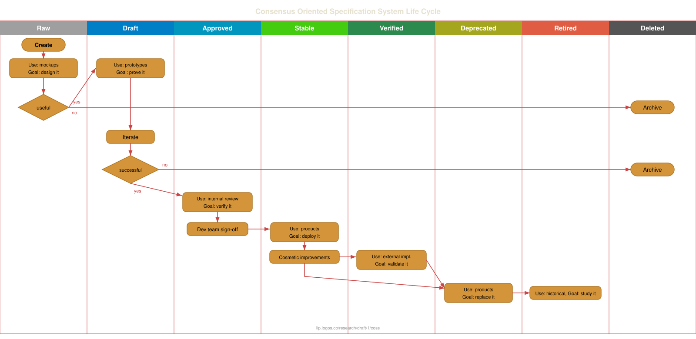

1/COSS
| Field | Value |
|---|---|
| Name | Consensus-Oriented Specification System |
| Slug | 1 |
| Status | draft |
| Type | RFC |
| Category | Best Current Practice |
| Editor | Daniel Kaiser danielkaiser@status.im |
| Contributors | Oskar Thoren oskarth@titanproxy.com, Pieter Hintjens ph@imatix.com, André Rebentisch andre@openstandards.de, Alberto Barrionuevo abarrio@opentia.es, Chris Puttick chris.puttick@thehumanjourney.net, Yurii Rashkovskii yrashk@gmail.com, Jimmy Debe jimmy@status.im |
Timeline
- 2026-06-16 —
16e8af1— Chore/separate messaging specs (#361) - 2026-06-12 —
124f895— chore: fix broken links (#357) - 2026-05-28 —
d45eed2— Chore: mirror blochain specs into github/mdbook (#347) - 2026-05-11 —
1ac7689— chore: split ift ts specs (#334) - 2026-04-20 —
c3d15a9— COSS overhaul: new statuses, CFR type, raw-spec leniency (#308) - 2026-03-23 —
011eea8— docs(1/coss): add Approved/Verified statuses, CFR doc type, and raw-spec leniency (#301) - 2026-01-16 —
f01d5b9— chore: fix links (#260) - 2026-01-16 —
89f2ea8— Chore/mdbook updates (#258) - 2025-12-22 —
0f1855e— Chore/fix headers (#239) - 2025-12-22 —
b1a5783— Chore/mdbook updates (#237) - 2025-12-18 —
d03e699— ci: add mdBook configuration (#233) - 2025-11-04 —
dd397ad— Update Coss Date (#206) - 2024-10-09 —
d5e0072— cosmetic: fix external links in 1/COSS (#100) - 2024-09-13 —
3ab314d— Fix Files for Linting (#94) - 2024-08-09 —
ed2c68f— 1/COSS: New RFC Process (#4) - 2024-02-01 —
3eaccf9— Update and rename COSS.md to coss.md - 2024-01-30 —
990d940— Rename COSS.md to COSS.md - 2024-01-27 —
6495074— Rename vac/rfcs/01/README.md to vac/01/COSS.md - 2024-01-25 —
bab16a8— Rename README.md to README.md - 2024-01-25 —
a9162f2— Create README.md
This document describes a consensus-oriented specification system (COSS) for building interoperable technical specifications. COSS is based on a lightweight editorial process that seeks to engage the widest possible range of interested parties and move rapidly to consensus through working code.
This specification is based on Unprotocols 2/COSS, used by the ZeromMQ project. It is equivalent except for some areas:
- recommending the use of a permissive licenses, such as CC0 (with the exception of this document);
- miscellaneous metadata, editor, and format/link updates;
- more inheritance from the IETF Standards Process, e.g. using RFC categories: Standards Track, Informational, and Best Common Practice;
- standards track specifications SHOULD follow a specific structure that both streamlines editing, and helps implementers to quickly comprehend the specification
- specifications MUST feature a header providing specific meta information
- raw specifications will not be assigned numbers
- section explaining the IFT Request For Comments specification process managed by Logos Research
License
Copyright (c) 2008-26 the Editor and Contributors.
This Specification is free software; you can redistribute it and/or modify it under the terms of the GNU General Public License as published by the Free Software Foundation; either version 3 of the License, or (at your option) any later version.
This specification is distributed in the hope that it will be useful, but WITHOUT ANY WARRANTY; without even the implied warranty of MERCHANTABILITY or FITNESS FOR A PARTICULAR PURPOSE. See the GNU General Public License for more details.
You should have received a copy of the GNU General Public License along with this program; if not, see gnu.org.
Change Process
This document is governed by the 1/COSS (COSS).
Language
The key words "MUST", "MUST NOT", "REQUIRED", "SHALL", "SHALL NOT", "SHOULD", "SHOULD NOT", "RECOMMENDED", "MAY", and "OPTIONAL" in this document are to be interpreted as described in RFC 2119.
Goals
The primary goal of COSS is to facilitate the process of writing, proving, and improving new technical specifications. A "technical specification" defines a protocol, a process, an API, a use of language, a methodology, or any other aspect of a technical environment that can usefully be documented for the purposes of technical or social interoperability.
COSS is intended to above all be economical and rapid, so that it is useful to small teams with little time to spend on more formal processes.
Principles:
- We aim for rough consensus and running code; inspired by the IETF Tao.
- Specifications are small pieces, made by small teams.
- Specifications should have a clearly responsible editor.
- The process should be visible, objective, and accessible to anyone.
- The process should clearly separate experiments from solutions.
- The process should allow deprecation of old specifications.
Specifications should take minutes to explain, hours to design, days to write, weeks to prove, months to become mature, and years to replace. Specifications have no special status except that accorded by the community.
Architecture
COSS is designed around fast, easy to use communications tools. Primarily, COSS uses a wiki model for editing and publishing specifications texts.
- The domain is the conservancy for a set of specifications.
- The domain is implemented as an Internet domain.
- Each specification is a document together with references and attached resources.
- A sub-domain is a initiative under a specific domain.
Individuals can become members of the domain by completing the necessary legal clearance. The copyright, patent, and trademark policies of the domain must be clarified in an Intellectual Property policy that applies to the domain.
Specifications exist as multiple pages, one page per version, (discussed below in "Branching and Merging"), which should be assigned URIs that MAY include an number identifier.
Thus, we refer to new specifications by specifying its domain, its sub-domain and short name. The syntax for a new specification reference is:
<domain>/<sub-domain>/<shortname>
For example, this specification should be lip.logos.co/research/draft/1/coss, if the status were raw.
A number will be assigned to the specification when obtaining draft status. New versions of the same specification will be assigned a new number. The syntax for a specification reference is:
<domain>/<sub-domain>/<number>/<shortname>
For example, this specification is lip.logos.co/research/draft/1/coss. The short form 1/COSS may be used when referring to the specification from other specifications in the same domain.
Specifications (excluding raw specifications) carries a different number including branches.
COSS Lifecycle
Every specification has an independent lifecycle that documents clearly its current status. For a specification to receive a lifecycle status, a new specification SHOULD be presented by the team of the sub-domain. After discussion amongst the contributors has reached a rough consensus, as described in RFC7282, the specification MAY begin the process to upgrade its status.
A specification has eight possible states that reflect its maturity and contractual weight:

Raw Specifications
All new specifications are raw specifications. Changes to raw specifications can be unilateral and arbitrary. A sub-domain MAY use the raw status for new specifications that live under their domain. Raw specifications have no contractual weight.
Draft Specifications
When raw specifications can be demonstrated, they become draft specifications and are assigned numbers. Changes to draft specifications should be done in consultation with users. Draft specifications are contracts between the editors and implementers.
Approved Specifications
When draft specifications have been reviewed and verified by the internal development team, they become approved specifications. Approved specifications are ready to be included in the specification index. Changes to approved specifications should be done in consultation with the development team. Approved specifications are contracts between the editors, the development team, and implementers.
Stable Specifications
When approved specifications are used by third parties, they become stable specifications. Changes to stable specifications should be restricted to cosmetic ones, errata and clarifications. Stable specifications are contracts between editors, implementers, and end-users.
Verified Specifications
When stable specifications have been implemented by a non-IFT entity, they become verified specifications. Verified status indicates external validation of the specification through independent implementation. Changes to verified specifications MUST be restricted to errata and clarifications. Verified specifications are contracts between editors, implementers, and external parties.
Deprecated Specifications
When stable or verified specifications are replaced by newer specifications, they become deprecated specifications. Deprecated specifications should not be changed except to indicate their replacements, if any. Deprecated specifications are contracts between editors, implementers, and end-users.
Retired Specifications
When deprecated specifications are no longer used in products, they become retired specifications. Retired specifications are part of the historical record. They should not be changed except to indicate their replacements, if any. Retired specifications have no contractual weight.
Deleted Specifications
Deleted specifications are those that have not reached maturity (stable) and were discarded. They should not be used and are only kept for their historical value. Only Raw and Draft specifications can be deleted.
Editorial control
A specification MUST have a single responsible editor, the only person who SHALL change the status of the specification through the lifecycle stages.
A specification MAY also have additional contributors who contribute changes to it. It is RECOMMENDED to use a process similar to C4 process to maximize the scale and diversity of contributions.
Unlike the original C4 process however, it is RECOMMENDED to use CC0 as a more permissive license alternative. We SHOULD NOT use GPL or GPL-like license. One exception is this specification, as this was the original license for this specification.
The editor is responsible for accurately maintaining the state of specifications, for retiring different versions that may live in other places and for handling all comments on the specification.
Branching and Merging
Any member of the domain MAY branch a specification at any point. This is done by copying the existing text, and creating a new specification with the same name and content, but a new number. Since raw specifications are not assigned a number, branching by any member of a sub-domain MAY differentiate specifications based on date, contributors, or version number within the document. The ability to branch a specification is necessary in these circumstances:
- To change the responsible editor for a specification, with or without the cooperation of the current responsible editor.
- To rejuvenate a specification that is stable but needs functional changes. This is the proper way to make a new version of a specification that is in stable or deprecated status.
- To resolve disputes between different technical opinions.
The responsible editor of a branched specification is the person who makes the branch.
Branches, including added contributions, are derived works and thus licensed under the same terms as the original specification. This means that contributors are guaranteed the right to merge changes made in branches back into their original specifications.
Technically speaking, a branch is a different specification, even if it carries the same name. Branches have no special status except that accorded by the community.
Conflict resolution
COSS resolves natural conflicts between teams and vendors by allowing anyone to define a new specification. There is no editorial control process except that practised by the editor of a new specification. The administrators of a domain (moderators) may choose to interfere in editorial conflicts, and may suspend or ban individuals for behaviour they consider inappropriate.
Specification Structure
Meta Information
Specifications MUST contain certain metadata fields. It is RECOMMENDED that specification metadata is specified as a YAML header (where possible). This will enable programmatic access to specification metadata.
Fields marked required MUST be present in all specifications at draft status or above. Fields marked optional MAY be omitted, particularly in raw specifications that are still being developed.
| Key | Required | Value | Type | Example |
|---|---|---|---|---|
| name | required | full name | string | Consensus-Oriented Specification System |
| slug | required | number | int | 1 |
| status | required | status | string | draft |
| type | required | document type | string | RFC |
| category | optional | category | string | Best Current Practice |
| tags | optional | 0 or several tags | list | waku-application, waku-core-protocol |
| editor | optional | editor name/email | string | Oskar Thoren oskarth@titanproxy.com |
| contributors | optional | contributors | list | - Pieter Hintjens ph@imatix.com - André Rebentisch andre@openstandards.de - Alberto Barrionuevo abarrio@opentia.es - Chris Puttick chris.puttick@thehumanjourney.net - Yurii Rashkovskii yrashk@gmail.com |
For raw specifications,
only name and status are strictly required.
All other fields SHOULD be added before the specification is promoted to draft status.
IFT/Logos LIP Process
[!Note] This section is introduced to allow contributors to understand the IFT (Institute of Free Technology) Logos LIP specification process. Other organizations may make changes to this section according to their needs.
Logos Research is a department under the IFT organization that provides RFC (Request For Comments) specification services. This service works to help facilitate the RFC process, assuring standards are followed. Contributors within the service SHOULD assist a sub-domain in creating a new specification, editing a specification, and promoting the status of a specification along with other tasks. Once a specification reaches some level of maturity by rough consensus, the specification SHOULD enter the Logos LIP process. Similar to the IETF working group adoption described in RFC6174, the Logos LIP process SHOULD facilitate all updates to the specification.
Specifications are introduced by projects, under a specific domain, with the intention of becoming technically mature documents. The IFT domain currently houses the following projects:
- Messaging
- Storage
- Blockchain
- Annoncomms
When a specification is promoted to draft status, the number that is assigned MAY be incremental or by the sub-domain and the Logos LIP process. Standards track specifications MUST be based on the Logos LIP template before obtaining a new status. All changes, comments, and contributions SHOULD be documented.
Document Types
The IFT specification process recognizes two document types:
RFC (Request for Comments) is the primary document type for technical specifications. RFCs progress through the full COSS lifecycle (raw → draft → approved → stable → verified). All specifications described in this document are RFCs by default.
CFR (Change for Request) is a document type for proposing changes or amendments to existing specifications. A CFR describes a specific, bounded change to an existing RFC. CFRs follow the same lifecycle as RFCs but are scoped to a single change proposal. All eight lifecycle statuses apply to CFRs. A CFR that reaches stable or verified status MAY be merged back into the target RFC, after which the CFR transitions to deprecated.
Conventions
Where possible editors and contributors are encouraged to:
- Refer to and build on existing work when possible, especially IETF specifications.
- Contribute to existing specifications rather than reinvent their own.
- Use collaborative branching and merging as a tool for experimentation.
- Use Semantic Line Breaks: sembr.
Appendix A. Color Coding
It is RECOMMENDED to use color coding to indicate specification's status. Color coded specifications SHOULD use the following color scheme: